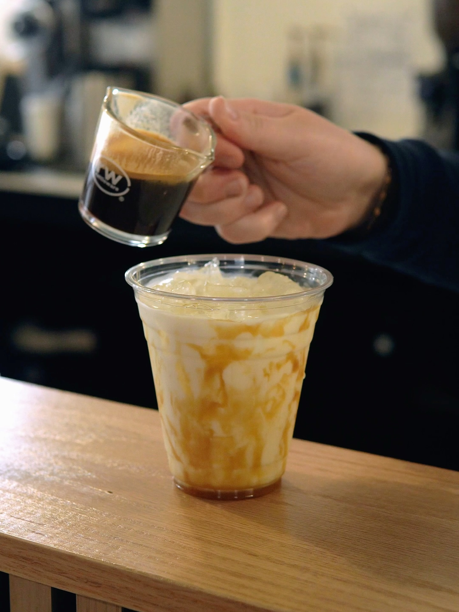

“Taste and see that the Lord is good.” – Psalm 34:8
About Fellows on Main
Fellows on Main is more than just a coffee shop — it’s a space for fellowship, faith, and flavor. Founded with the mission to serve the Ellendale community, our vision is simple: to glorify God through genuine hospitality and excellent coffee.
“Whatever you do, work heartily, as for the Lord and not for men.” – Colossians 3:23
Seasonal Coffee Highlights
Inspired by the beauty of creation, our seasonal drinks celebrate each season’s flavors while reminding us to be thankful in all things.

Harvest Latte
Rich espresso, spiced pumpkin, and a touch of maple — a cozy taste of fall blessings.
Peppermint Mocha
Sweet cocoa and cool mint come together to warm your heart this holiday season.
Our Menu
Espresso – Bold and rich, our foundation brew.
Pour Over – Smooth, slow-brewed perfection.
Matcha Latte – Earthy green tea blended with silky milk.
Pastries & Snacks – Locally baked and always fresh.
Photo Gallery
Meet the Team
We’re a family of believers serving love in every cup.
Alex Smith
Owner & Barista — “Let all that you do be done in love.” (1 Cor 16:14)